← Index · ← Previous · Next →
Authors: Michael Pfeifer, Marco Valentini, Matthias Dietl, Fabian Anmasser, Simon Schey, Jakob Wahl, Philip C. Holz, Clemens Rössler, Yves Colombe, Philipp Schindler
Type: experiment · Category: other · PDF: https://arxiv.org/pdf/2605.16543v1
Analysis basis: full PDF text, analyzed in chunks
Topic relevance: 🔥 QC/QI experiment 4/5 · analog quantum simulation 3/5
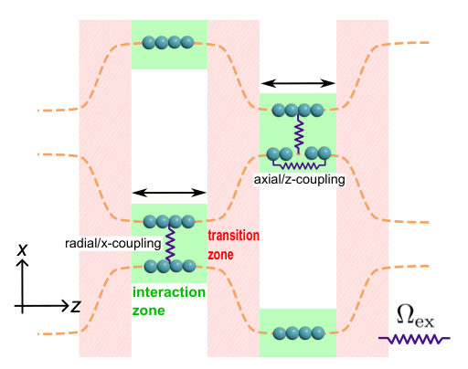
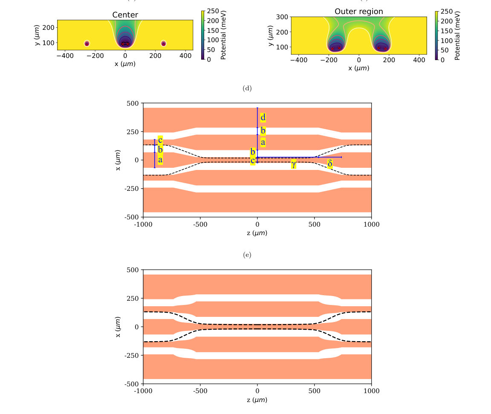
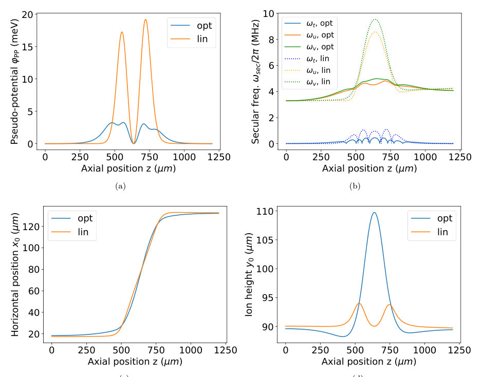
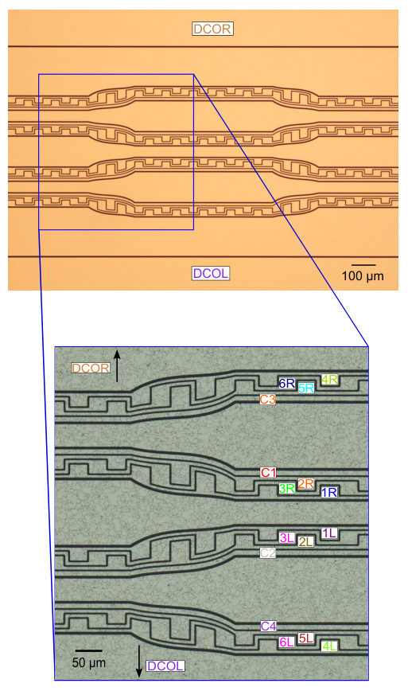
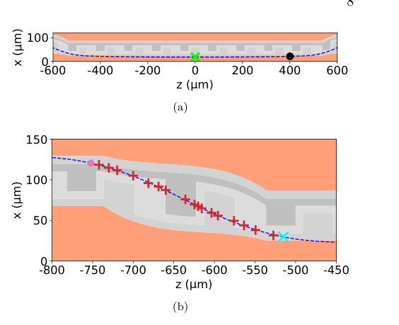
Summary. The paper presents a new ion trap chip design that allows for the tuning of radial coupling in 2D ion lattices using only DC voltages. By optimizing electrode geometry, the authors successfully demonstrated reliable ion transport through transition zones with low heating rates. This approach provides a scalable path toward large-scale quantum computing using complex 2D architectures.
Why it may be interesting. This work provides a scalable hardware solution for 2D ion trap architectures, which is crucial for implementing large-scale quantum simulations and many-body dynamics in multidimensional ion crystals.
Main problem. The difficulty of controlling radial separation between ion chains in Quantum Spring Array (QSA) architectures without using RF voltage modulation, which causes high heating rates.
Main result. Demonstration of a new ion trap design that enables radial transport and tuning of ion separation using only DC voltages, significantly reducing pseudo-potential barriers and heating.
Method. The researchers used an optimization strategy (Nelder-Mead solver) to design curved RF electrodes and transition zones, then fabricated a prototype on a fused silica substrate and characterized it using 40Ca+ ions.
Model / system. A microfabricated surface ion trap chip featuring a Quantum Spring Array (QSA) architecture, where ion chains are arranged in a 2D lattice and interact via the Coulomb force.
Key observables. Radial transport fidelity, ion heating rates, stray electric fields, micromotion modulation index, and radial secular frequencies.
Important parameters / regimes. RF drive frequency of 31.91 MHz, RF amplitude of 194.5 V, ion-surface separation of ~90 micrometers, and heating rates of 18 +/- 3 ph/s.
Assumptions / limitations. The design uses the gapless plane approximation, neglecting the physical gaps between RF and DC electrodes.
Figures summary. Figure 1 shows the trap geometry and coupling modes; Figure 2 compares linear vs. optimized electrode transition zones; Figure 3 illustrates the reduction in pseudo-potential barriers and frequency variation; Figure 8 and 9 show microscopy of the multi-layer trap and its vias.
Paper structure. The paper introduces the QSA architecture and the limitations of RF-based tuning, presents the optimized curved electrode design and its simulation, demonstrates experimental transport and characterization of a single-layer prototype, and concludes with a scaling path using a multi-layer fabrication approach.
Microfabricated ion trap chips are at the core of some of the most advanced quantum computers. How a large number of ions is arranged and controlled on an ion trap chip depends on the chosen trap architecture. One such architecture is the quantum spring array (QSA). In the QSA architecture, ion chains are arranged in a two-dimensional lattice and interact with ion chains in neighboring sites in the radial and axial directions of the respective chain. This interaction, or coupling, is mediated by the Coulomb force while keeping ions in separate trapping sites, and scales inversely with the third power of the separation. The capability to control the distance between ions in the lattice is thus essential. In previous works, the radial separation between ions was tuned by controlling the rf pseudo-potential, which revealed to be experimentally challenging to realize while maintaining low heating rates. In this work, we present an ion trap chip design that allows tuning of the radial distance between ions using only dc voltages. The radial transport is executed between different interaction zones, designated for quantum operations, through specifically designed transition zones. A prototype of this type of ion trap chip was microfabricated on fused silica substrate. Its functionality is characterized by demonstrating dc-controlled radial transport of a single ion through a transition zone and measuring stray fields and ion heating rates in the center of the trap. Moreover, the fabrication of a multi-metal layer version of such a trap is presented as a scaling path for the presented chip design.
Authors: Edward Gandar, Jesús Rubio
Type: theory · Category: quantum information and computing · PDF: https://arxiv.org/pdf/2605.16978v1
Analysis basis: full PDF text, analyzed in chunks
Topic relevance: 🔥 quantum measurements 4/5 · methods for driven-dissipative 2/5
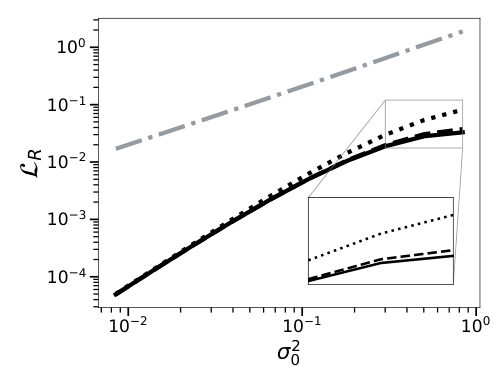
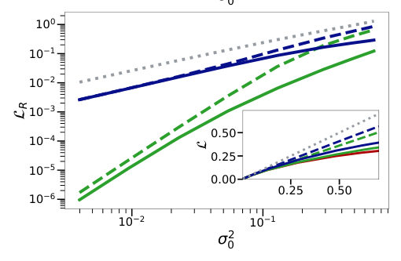
Summary. This paper introduces a closed-form method for Bayesian quantum estimation of Gaussian states by approximating the optimal operator within a finite-dimensional polynomial subspace. It transforms a complex, infinite-dimensional optimization problem into a tractable linear algebra problem. The framework allows for the design of near-optimal, experimentally feasible measurement strategies for tasks like displacement and squeezing estimation.
Why it may be interesting. It provides a practical, analytical tool for optimizing continuous-variable quantum metrology, bridging the gap between complex numerical Bayesian methods and experimentally implementable Gaussian operations.
Main problem. The computational intractability of Bayesian quantum estimation for continuous-variable Gaussian states due to infinite-dimensional optimization and complex parameter integrals.
Main result. A variational framework that reduces the optimization of measurements and estimators to a finite-dimensional linear problem with closed-form solutions using polynomial subspaces.
Method. The authors use a variational approach restricting operators to a polynomial subspace of canonical quadratures, transforming the Mean Square Loss minimization into a solvable linear system involving a Gram matrix.
Model / system. Continuous-variable (CV) quantum systems consisting of N bosonic modes, specifically focusing on Gaussian states characterized by mean vectors and covariance matrices.
Key observables. Canonical quadratures (q and p), Symmetric Posterior Mean (SPM) operator, and Weyl symbols.
Important parameters / regimes. Displacement parameter, squeezing parameter, prior variance (Gaussian and uniform), and thermal photon number.
Assumptions / limitations. The input states are Gaussian; the optimization is restricted to a polynomial subspace; the Gaussian state is assumed to be faithful.
Figures summary. Figure 1 compares relative Mean Squared Loss for different polynomial estimators (linear, cubic) and the posterior mean in displacement estimation. Figure 2 shows the convergence of constrained and posterior mean estimators toward the global minimum for squeezing estimation.
Paper structure. The paper introduces the computational bottleneck in Bayesian QET, proposes a variational framework using polynomial subspaces, provides a geometric interpretation of the solution as an orthogonal projection, derives optimality conditions, and validates the method with single-shot examples of displacement and squeezing estimation.
Bayesian quantum estimation provides a robust framework for quantum technologies, especially in scenarios with limited data and minimal prior information. Yet, its application to continuous-variable Gaussian systems has remained limited and largely numerical due to the complexity of the underlying parameter integrals. Here, we introduce a variational framework reducing the optimisation over measurements and estimators to a finite-dimensional linear problem and admitting closed-form solutions. This is achieved by restricting the analysis to operators polynomial in the canonical quadratures, leading to solutions with a geometric interpretation as orthogonal projections of the global optimum. We further derive a necessary and sufficient condition for global optimality. Through single-shot examples, we show that the framework yields experimentally feasible strategies based on Gaussian operations and quadrature measurements that are either optimal or near-optimal, and that replacing the induced estimator with the posterior mean further improves performance towards the global optimum.
Authors: Wenlong Sun, Gang Lu, Yuanfeng Jin
Type: theory · Category: quantum information and computing · PDF: https://arxiv.org/pdf/2605.16935v1
Analysis basis: full PDF text, analyzed in chunks
Topic relevance: 🔥 entanglement & information structure 4/5 · non-equilibrium dynamics 2/5
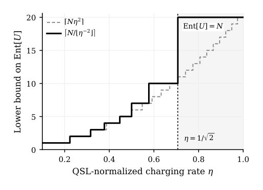
Summary. This paper proves that the speed of charging a quantum battery is fundamentally limited by the amount of multipartite entanglement present in the system. It establishes an exact 'staircase' relationship where faster charging rates directly certify higher levels of entanglement depth, including genuine N-partite entanglement.
Why it may be interesting. It provides a model-independent, orbit-level diagnostic for quantifying many-body entanglement resources based solely on the observed speed of a dynamical process.
Main problem. Determining the fundamental relationship between the speed of a complete quantum charging process and the amount of multipartite entanglement depth required to achieve that speed.
Main result. The authors establish an exact integer staircase frontier relating the QSL-normalized rate to entanglement depth, proving that crossing the threshold eta > 1/sqrt(2) certifies genuine N-partite entanglement.
Method. The study uses Quantum Speed Limit (QSL) geometry, specifically the Mandelstam-Tamm bound, combined with Minkowski's integral inequality and a Baire category argument to relate path speed to block orthogonalization.
Model / system. A closed N-qubit quantum battery undergoing unitary evolution from an all-down state to an all-up state under a time-independent Hamiltonian.
Key observables. QSL-normalized rate (eta), entanglement depth (Ent[U]), and the number of independent blocks (m).
Important parameters / regimes. N-qubit system size, entanglement depth constraint (k), and the threshold eta = 1/sqrt(2) for N-partite entanglement.
Assumptions / limitations. The results apply to finite-dimensional pure-state complete charging under a closed, time-independent Hamiltonian with exact endpoint conditions.
Figures summary. Figure 1 displays the exact integer staircase frontier for N=20, plotting the charging rate against the lower bound on entanglement depth.
Paper structure. The paper introduces the problem of quantum charging speed, defines the QSL-normalized rate, provides the mathematical derivation of the speed-depth frontier using block orthogonalization, constructs a saturated model to prove sharpness, and concludes with entanglement certification thresholds.
Complete quantum charging provides a sharp setting in which to ask how much multipartite entanglement is forced by speed itself. For a closed \(N\)-qubit battery evolving from \(\ket{\downarrow}^{\otimes N}\) to \(\ket{\uparrow}^{\otimes N}\) under a time-independent Hamiltonian, we exactly solve the pure-state depth-constrained speed problem. If the realized trajectory has entanglement depth at most \(k\), then the largest possible QSL-normalized rate \(η=τ_{\rm QSL}/T\) is \(η_{\max}(k)=\lceil N/k\rceil^{-1/2}\). Conversely, an observed rate \(η\) certifies trajectory entanglement depth at least \(\bigl\lceil N/\lfloor η^{-2}\rfloor\bigr\rceil\). The mechanism is block orthogonalization: under a fixed product partition, complete charging forces all blocks to orthogonalize simultaneously, and the quantum speed limit converts this counting constraint into the speed bound. Balanced cluster-flip evolutions saturate the bound, establishing an exact integer staircase frontier. Thus fast complete charging cannot be explained by many small independently charging blocks; in particular, crossing the threshold \(η>1/\sqrt2\) certifies, for \(N>1\), the generation of genuine \(N\)-partite entanglement.
Authors: Rishav Chaudhuri, Ayush Raj, Soham Ray, Sai Satyam Samal
Type: theory · Category: statistical mechanics · PDF: https://arxiv.org/pdf/2605.18594v1
Analysis basis: full PDF text, analyzed in chunks
Topic relevance: 🔥 entanglement & information structure 4/5 · non-equilibrium dynamics 2/5
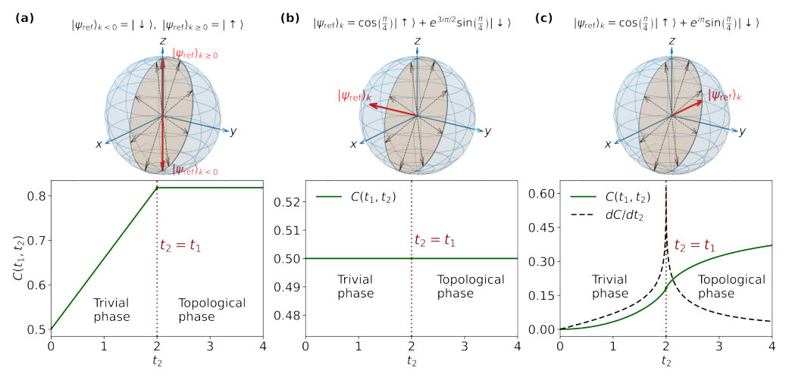
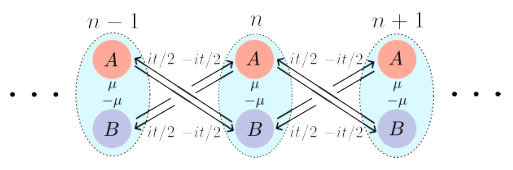
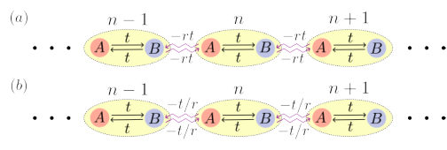
Summary. This paper demonstrates that the derivative of Krylov spread complexity can detect any gap-closing event in two-band models, not just topological transitions. By establishing a mathematical bound related to fidelity susceptibility, the authors show that complexity captures the non-analyticity of the system's energy spectrum. They also uncover a universal scaling ratio and a duality between topological and trivial phases in the SSH model.
Why it may be interesting. This is highly relevant for many-body dynamics as it provides a new geometric tool to detect criticality and explores the fundamental relationship between quantum complexity and the sensitivity of the ground state to parameter changes.
Main problem. The paper investigates whether Krylov spread complexity can serve as a diagnostic for phase transitions and gap-closing events in two-band Hamiltonians.
Main result. The authors prove that the derivative of Krylov spread complexity is bounded by fidelity susceptibility, meaning it is sensitive to both topological and trivial gap closings, and they identify a universal ratio between these two quantities.
Method. The study uses a geometric formulation based on Bloch sphere data to calculate complexity without constructing a circuit Hamiltonian, alongside analytical integration using elliptic functions.
Model / system. The analysis focuses on two-band Hamiltonians, specifically the Su-Schrieffer-Heeger (SSH) model for topological transitions and the massive Dirac Hamiltonian for trivial gap closings.
Key observables. Krylov spread complexity, fidelity susceptibility, winding number (Zak phase), and the ratio between the complexity derivative and the square root of fidelity susceptibility.
Important parameters / regimes. Hopping amplitudes (t1, t2), mass parameter (mu), Bloch sphere angles (theta, phi), and the duality parameter (r).
Assumptions / limitations. The derived inequality assumes a momentum-independent reference state, and the scope is primarily limited to two-band Hamiltonian systems.
Figures summary. Figures show the SSH model lattice structure, plots of Krylov complexity and its derivative exhibiting logarithmic divergence and plateaus, and the symmetry/saturation of the ratio R between complexity and fidelity susceptibility.
Paper structure. The paper introduces the problem of complexity as a phase probe, develops a geometric formulation for two-band models, applies this to the SSH and Dirac models to compare topological vs. trivial transitions, establishes mathematical bounds and duality, and extends the analysis to non-Hermitian systems.
We investigate Krylov spread complexity for the ground state of two-band Hamiltonians, where the reference state is a generic state on the Bloch sphere. The spread complexity is obtained by using a purely geometric formulation in terms of Bloch sphere data without constructing the circuit Hamiltonian. For generic reference states, the derivative of the spread complexity is logarithmically divergent at the topological phase transition in the Su-Schrieffer-Heeger (SSH) model. We demonstrate that the derivative of the spread complexity is bounded by fidelity susceptibility for general two-band models, indicating the sensitivity of the spread complexity to any gap closing (topological or trivial). This is illustrated in the massive Dirac Hamiltonian with a trivial gap closing. Finally, we introduce a non-unitary duality in the SSH model between the topological and trivial phases, which manifests itself in the spread complexity and fidelity susceptibility.
Authors: Jiajie Guo, Shuheng Liu, Matteo Fadel, Qiongyi He
Type: theory · Category: quantum information and computing · PDF: https://arxiv.org/pdf/2605.18605v1
Analysis basis: full PDF text, analyzed in chunks
Topic relevance: 🔥 entanglement & information structure 4/5 · Keldysh / 2PI / non-Gaussian methods 2/5
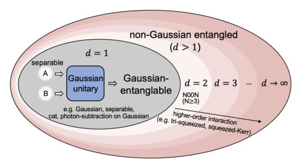
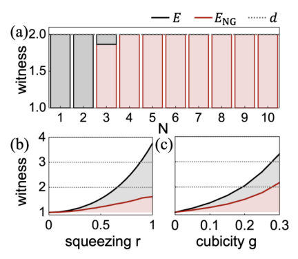
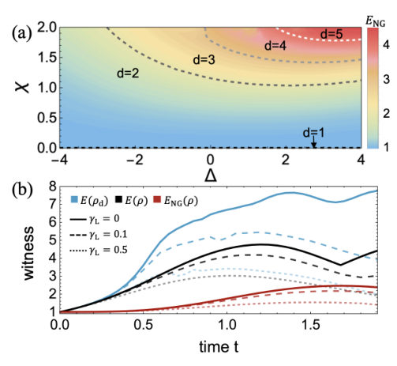
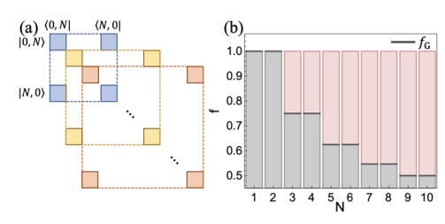
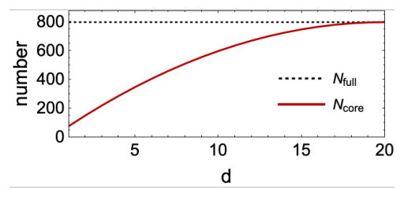
Summary. This paper establishes a new hierarchy for non-Gaussian entanglement in bosonic systems using a quantitative witness based on the Schmidt number. It connects the level of non-Gaussianity to the complexity of quantum state learning and proves that such entanglement can be distilled using only Gaussian operations. This provides a practical tool for identifying and utilizing non-Gaussian resources in quantum optical and circuit-QED platforms.
Why it may be interesting. It provides a rigorous framework for classifying non-Gaussian resources in continuous-variable systems, directly linking entanglement dimensionality to the practical difficulty of quantum state tomography and the utility of Gaussian-based distillation.
Main problem. The challenge of quantifying and characterizing non-Gaussian entanglement in bipartite bosonic systems and establishing a hierarchy that connects entanglement dimension to state-learning complexity.
Main result. The authors introduce a quantitative witness E_NG that defines a natural hierarchy of non-Gaussian entanglement based on the Schmidt number, and demonstrate that this entanglement can serve as a resource for distillation using only Gaussian operations.
Method. The study uses the trace norm of the partial transpose minimized over Gaussian unitaries to define the witness, alongside complexity analysis for state reconstruction and a two-copy distillation protocol.
Model / system. Bipartite bosonic systems, specifically focusing on continuous-variable states such as NOON states, squeezed Kerr states, and photon-subtracted Gaussian states, applicable to platforms like circuit-QED and quantum acoustics.
Key observables. The non-Gaussian entanglement witness E_NG, the Schmidt number hierarchy d, and the expectation value of a NOON-type witness operator F.
Important parameters / regimes. Squeezing strength, nonlinearity (Kerr parameter), loss rates, and the Gaussian-entanglable threshold f_G.
Assumptions / limitations. The optimization of the witness is performed over an effective set of Gaussian unitaries, and the distillation protocol assumes the availability of local homodyne measurements and classical communication.
Figures summary. Figure 1 illustrates the hierarchy of GE and non-Gaussian entangled states, linking the integer d to entanglement levels and state-learning complexity; Figure 5 shows the scaling of reconstruction complexity as a function of the entanglement integer d.
Paper structure. The paper introduces the problem of non-Gaussian entanglement, defines the E_NG witness and its hierarchy, provides mathematical proofs for its properties, benchmarks the framework with specific states (NOON, Kerr), analyzes robustness to loss, proposes an experimental NOON-type witness, and demonstrates entanglement distillation protocols.
Non-Gaussian entanglement is a promising resource in various quantum tasks. A recently defined class identifies entanglement that cannot be generated by applying Gaussian operations to separable inputs. To further explore the entanglement in this context, we introduce a quantitative witness $E_{\rm NG}$ in bipartite bosonic systems, which satisfies $E_{\rm NG}=1$ for all Gaussian-entanglable states, while $E_{\rm NG}>1$ certifies non-Gaussian entanglement. Its ceiling $d=\lceil E_{\rm NG}\rceil$ provides a lower bound on the Schmidt number irreducible by Gaussian transformations, thereby defining a natural hierarchy of non-Gaussian entanglement. For pure states, the condition is sharp and the hierarchy reflects the complexity of state learning. We benchmark the framework with some paradigmatic non-Gaussian states, such as NOON states and squeezed Kerr states, and analyze its robustness against loss. Moreover, we construct an experimentally economical NOON-type witness requiring only four projective measurements, where an analytical Gaussian-entanglable threshold is derived. These results establish an operationally meaningful and experimentally accessible framework for identifying non-Gaussian entanglement resources in continuous-variable quantum platforms.
Authors: Fionnuala Curran
Type: theory · Category: quantum information and computing · PDF: https://arxiv.org/pdf/2605.18291v1
Analysis basis: full PDF text, analyzed in chunks
Topic relevance: 🔥 quantum measurements 4/5 · entanglement & information structure 2/5
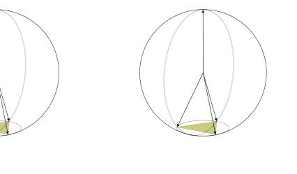
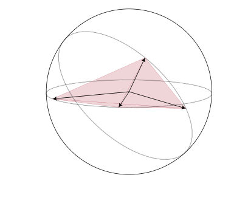
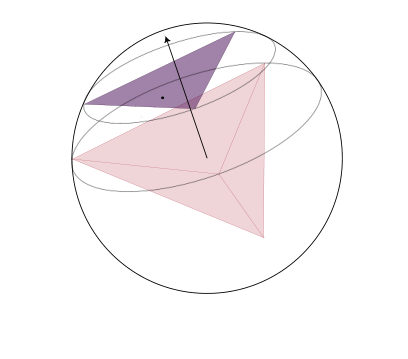
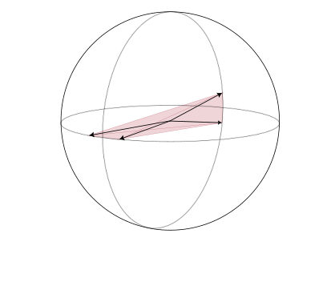
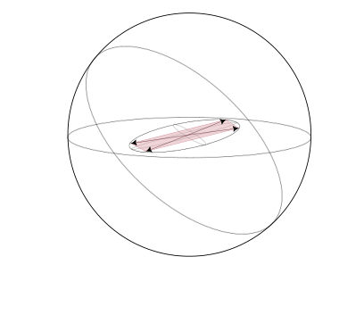
Summary. This paper investigates how much randomness can be extracted from non-projective quantum measurements. It proves that a new class of 'skewed SIC' measurements can achieve the theoretical maximum of randomness and identifies the SIC measurement as the least random among certain qubit measurement classes.
Why it may be interesting. This is highly relevant for quantum optics and quantum information as it provides fundamental bounds on randomness extraction and characterizes the security of measurement-based protocols against eavesdroppers.
Main problem. Quantifying the amount of intrinsic quantum randomness generated by extremal measurements beyond standard projective measurements, specifically determining which measurements maximize or minimize the guessing probability of an eavesdropper.
Main result. The paper identifies that SIC measurements are the least random among unbiased qubit measurements and introduces 'skewed SIC' measurements that can generate the maximal $2 \log d$ bits of randomness in dimensions where SICs exist.
Method. The author uses semidefinite programming (SDP) dualities, geometric analysis of polytopes in the Bloch ball, and KKT optimality conditions to characterize guessing probabilities and randomness.
Model / system. The study focuses on finite-dimensional quantum systems (qubits, qutrits, and ququarts) using Positive Operator-Valued Measures (POVMs), specifically rank-one extremal and Symmetric Informationally Complete (SIC) measurements.
Key observables. Conditional min-entropy $H_{\min}( ho, M)$, optimal guessing probability $P_{ ext{guess}}$, and quantum fidelity $F( ho, \sigma)$.
Important parameters / regimes. Dimension $d$, scaling parameter $\gamma$ for skewed SICs, noise parameter $\epsilon$, and angular parameters $\delta$ and $\alpha$ for qubit/qutrit measurement families.
Assumptions / limitations. The analysis primarily focuses on rank-one extremal POVMs and assumes a device-dependent or source-device-independent framework.
Figures summary. Figures illustrate geometric regions in the Bloch ball, the comparison between SIC and 'scissors' POVMs, and the space of average post-measurement states.
Paper structure. The paper begins by defining the problem of intrinsic randomness, moves to characterizing unbiased extremal qubit measurements, introduces the skewed SIC family and its randomness-generating properties, and concludes with higher-dimensional constructions for qutrits and ququarts.
The unpredictability of quantum physics gives rise to intrinsic randomness. In an adversarial scenario, any additional degrees of freedom must be attributed to an eavesdropper with correlations to the measurement set-up. The true randomness is then quantified by the probability that she correctly guesses the measurement outcomes, optimised over all possible strategies. Extremal measurements are appealing here, since they do not allow information to leak to such an eavesdropper. Beyond projective measurements, however, a simple question remains open: how much intrinsic randomness can be generated by a given extremal measurement? In a step towards solving it, we characterise the randomness generated by any unbiased extremal rank-one measurement acting on any state, solving the problem explicitly in dimension two. Four-outcome qubit measurements of this type are tomographic, so these results hold for fully source-device-dependent randomness too. The tetrahedral symmetric informationally complete (SIC) measurement, we find, has the least intrinsic randomness within this class. We also present the skewed SIC family of measurements, and use them to partially solve an open problem: we prove that $2 \log d$ bits of randomness, the maximal amount, can be generated device-dependently (or source-device-independently) in any dimension in which there exists a SIC measurement.
Authors: Luis Lozano
Type: both · Category: disordered systems and neural networks · PDF: https://arxiv.org/pdf/2605.17604v1
Analysis basis: full PDF text, analyzed in chunks
Topic relevance: 🔥 QC/QI experiment 4/5 · non-equilibrium dynamics 2/5
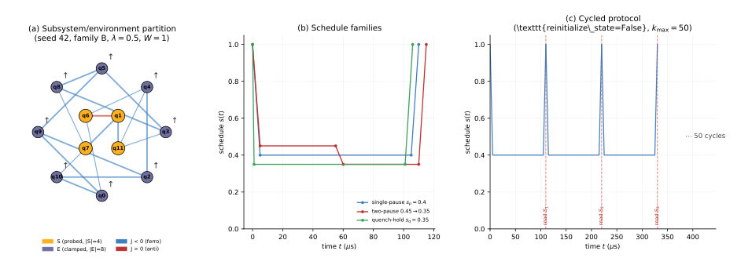
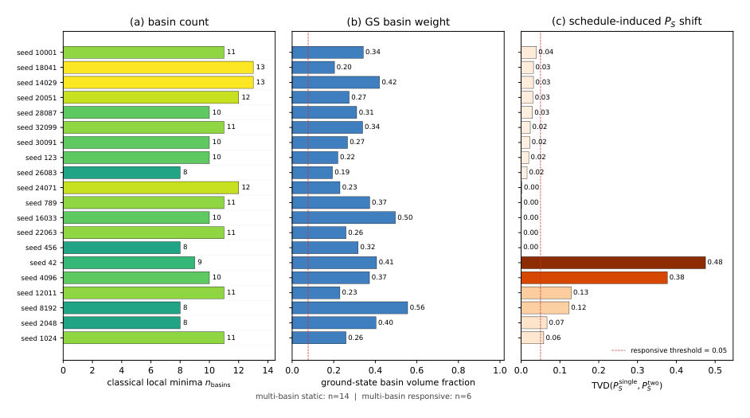
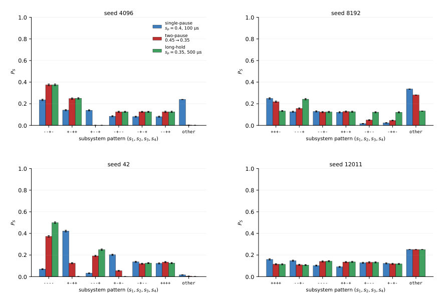
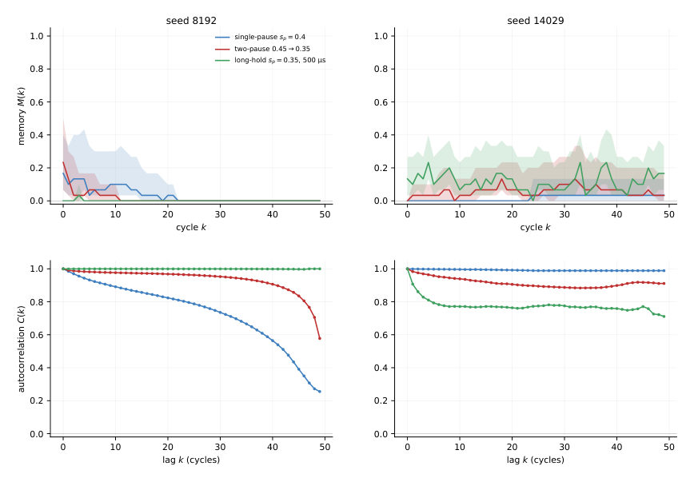
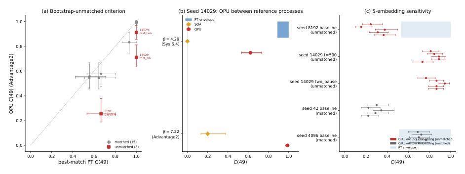
Summary. This paper investigates how different annealing schedules affect the distribution of energy basins in D-Wave quantum annealers. It demonstrates that while schedules can redistribute probability between local minima, they do not provide a universal quantum advantage over classical parallel tempering, and it corrects previous claims regarding the effectiveness of multi-pause schedules.
Why it may be interesting. not directly relevant
Main problem. Investigating whether the shape of reverse-anneal schedules in a quantum annealer controls the final sampling distribution of energy basins beyond simple temperature rescaling, and determining if these effects are genuine quantum signatures or reproducible by classical Monte Carlo processes.
Main result. The study finds that for certain instances, the QPU dynamics sit strictly between localized parallel tempering and delocalified path-integral annealing, and that schedule engineering can redistribute probability among basins but does not provide a universal quantum advantage, refuting previous claims of a 'two-pause enhancement'.
Method. The authors used a cycled reverse-anneal protocol on D-Wave Advantage2 and Advantage system6.4 hardware, comparing results against classical parallel tempering (PT) and path-integral simulated quantum annealing (SQA) using a bootstrap-based statistical framework.
Model / system. 12-qubit Ising instances with mixed frustration on random 3-regular logical graphs, implemented on D-Wave Advantage2 (Zephyr) and Advantage system6.4 (Pegasus) quantum annealers.
Key observables. Subsystem configuration autocorrelation C(k), memory order parameter M, endpoint distances to classical/quantum Gibbs targets (D_cl, D_q), and basin occupation/weight redistribution.
Important parameters / regimes. Effective temperature (beta_eff approx 7.22 and 4.29), annealing schedules (single-pause, two-pause, quench-and-hold), and transverse-field scale (A approx 1.38 GHz).
Assumptions / limitations. The study assumes that the observed 'unmatched' signals are not artifacts of minor-embedding, which is supported by native-graph control experiments.
Figures summary. Figure 5(a) compares QPU autocorrelation against PT benchmarks across various schedules; Figure 6 shows native-graph control experiments on induced subgraphs of the Zephyr hardware graph.
Paper structure. The paper introduces the problem of schedule-dependent dynamics, describes the hardware and Ising models used, details the reverse-anneal and classical comparison protocols, presents results on basin occupation and the 'bracketing' effect, provides a native-graph control to rule out embedding artifacts, and concludes by refuting previous claims of universal quantum enhancement via two-pause schedules.
On a mixed-frustration 12-qubit Ising instance (seed 14029) run on two D-Wave generations, Advantage2 Zephyr and Advantage_system6.4 Pegasus, the late-time subsystem autocorrelation under cycled reverse annealing sits strictly between two equilibrium reference processes at the device-calibrated effective temperature: localized parallel tempering, and delocalized equilibrated path-integral simulated quantum annealing at a fixed Advantage2 pause-point transverse-field scale. The bracket holds on all three tested schedules and at both hardware calibrations. We obtain this result through two ingredients: a cycled reverse-anneal protocol (reinitialize_state=False, 50 cycles per submission) used as a Markov-chain probe of the device's pause-point dynamics, and a parallel-tempering falsification framework with bias-corrected and accelerated bootstrap 95% confidence intervals. Of eighteen tested (seed, schedule) combinations on Advantage2, three are PT-unmatched and correspond to two distinct Ising instances; an independent native-graph control with no minor embedding on a third mixed-frustration instance reproduces the same direction of mismatch. Among twenty random training instances, schedule shape modulates basin occupation on six of the thirteen multi-basin-in-readout instances, with dominant-configuration shifts of up to 38 percentage points including changes of the dominant configuration. A pre-registered linear predictor of schedule sensitivity from exhaustively computable landscape features fails on ten held-out instances, indicating that schedule sensitivity is not captured by simple linear functions of the tested landscape moments. The bracketing result revises an earlier two-pause-enhancement claim and reframes reverse-anneal schedules as instance-specific basin-occupation probes rather than universal quantum-enhancement knobs.
Authors: Ryutaro Ohira, Shinichi Morisaka, Yoshinori Kurimoto, Toshiaki Inada, Ippei Nakamura, Takefumi Miyoshi, Atsushi Noguchi
Type: experiment · Category: other · PDF: https://arxiv.org/pdf/2605.17824v1
Analysis basis: full PDF text, analyzed in chunks
Topic relevance: 🔥 QC/QI experiment 4/5
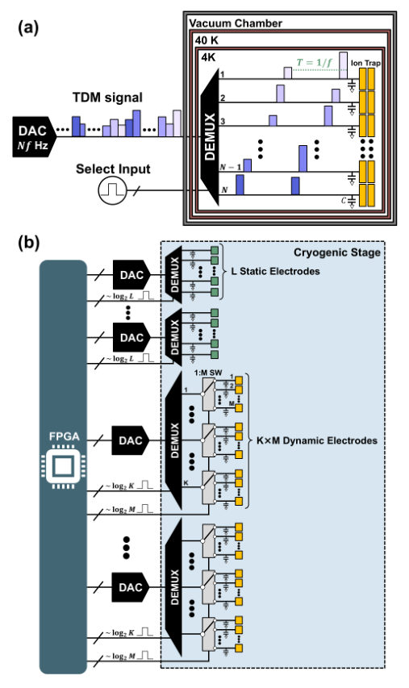
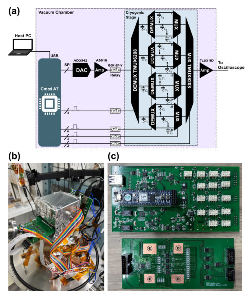
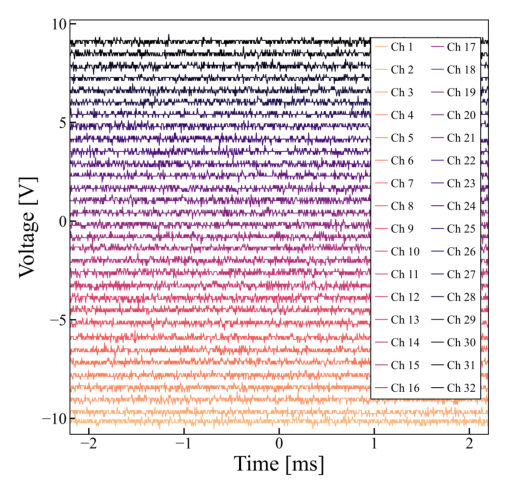
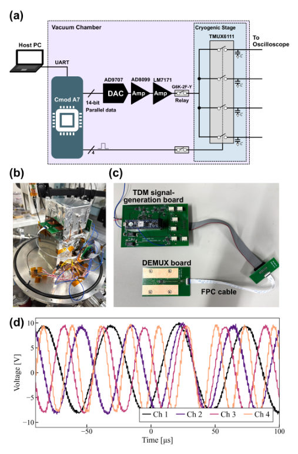
Summary. This paper demonstrates a cryogenic voltage control system using time-division multiplexing to reduce the number of wires needed for large-scale trapped-ion quantum processors. By successfully operating at 14 K and 27 K, the authors show that both static and dynamic electrode requirements can be met with significantly fewer vacuum feedthroughs. This approach provides a scalable path for managing the massive electrode counts required by QCCD architectures.
Why it may be interesting. This work provides a practical engineering solution to the scalability limits of trapped-ion processors, which is crucial for the realization of large-scale quantum computing architectures and complex many-body simulations in ion traps.
Main problem. The scaling of trapped-ion quantum computers using the QCCD architecture is limited by a 'wiring bottleneck,' where the massive number of electrodes required leads to an unsustainable number of vacuum feedthroughs and room-temperature DAC channels.
Main result. The researchers successfully demonstrated a cryogenic Time-Division-Multiplexed (TDM) voltage control system that achieves both static and dynamic electrode control at 14 K and 27 K, significantly reducing the required physical connections.
Method. A TDM-based architecture was implemented using a room-temperature FPGA-driven DAC and a cryogenic demultiplexer (DEMUX) board, utilizing a holding capacitor at each output to retain voltage between update cycles.
Model / system. The experimental platform is a cryogenic ion-trap system (utilizing 40-K and 4-K stages) designed for the Quantum Charge-Coupled Device (QCCD) architecture, featuring both static electrodes for potential compensation and dynamic electrodes for ion shuttling.
Key observables. Effective voltage update rates, voltage drop (leakage) over time, crosstalk between channels, and output voltage ranges.
Important parameters / regimes. Update rates of 37.5 kHz (static) and 1 MHz (dynamic); voltage range of +/- 10 V; operating temperatures of 14 K and 27 K; crosstalk levels around -12 to -35 dB.
Assumptions / limitations. The RC time constant of the output nodes must allow for DAC output settling and capacitor charging within the allocated time slot.
Figures summary. Figure 1 shows the TDM system schematic and architecture for electrode classes; Figure 2 details the physical cryogenic setup and hardware components; Figure 3 displays measured DC output voltages for 32 channels; Figure 4 shows the dynamic electrode setup and measured sinusoidal waveforms.
Paper structure. The paper introduces the wiring bottleneck, describes the TDM architecture and hardware implementation, presents experimental validation for both static and dynamic electrode classes at cryogenic temperatures, and discusses scaling implications and hardware limitations.
Trapped-ion quantum computers based on the quantum charge-coupled device architecture require on the order of ten trap electrodes per qubit, making the number of vacuum feedthroughs a bottleneck at the system scale. Time-division multiplexed (TDM)-based voltage control for trap electrodes provides a natural route to alleviate this constraint. However, previous studies have been limited to architectural proposals for static trap-potential compensation and room-temperature demonstrations of dynamic-electrode control, leaving cryogenic operation of TDM-based voltage control for static and dynamic electrodes experimentally unexplored. In this study, we develop and cryogenically validate TDM-based voltage control schemes for two distinct electrode classes. For static electrodes used in trap-potential compensation, we implement a 32-channel demultiplexed system operating at approximately 27~K, achieving an effective voltage update rate of 37.5~kHz with an output range of $\pm10~\mathrm{V}$ per channel. For dynamic electrodes used in ion operations, such as shuttling, we implement a four-channel demultiplexed system operating at approximately 14~K, achieving an effective voltage update rate of 1~MHz with a comparable output range. These results establish TDM-based voltage control as a practical approach for both electrode classes, providing a path for mitigating the vacuum feedthrough bottleneck in scalable trapped-ion quantum processors.
Authors: Chen-Chih Wang, Yi-Ping Huang, Sungkit Yip
Type: theory · Category: strongly correlated electrons · PDF: https://arxiv.org/pdf/2605.18002v1
Analysis basis: full PDF text, analyzed in chunks
Topic relevance: 🔥 entanglement & information structure 4/5
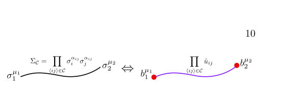
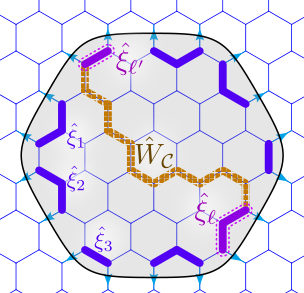
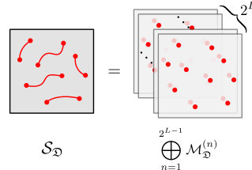
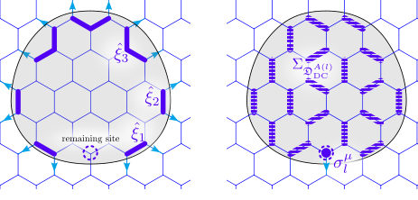
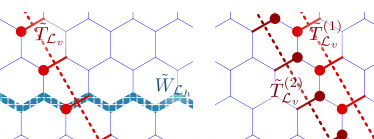
Summary. This paper provides an exact derivation of the density matrix for the Kitaev spin liquid, revealing how the entanglement entropy splits into distinct gauge and matter components. It establishes the microscopic link between spin and Majorana fermion representations and explains the high degeneracy in the entanglement spectrum through the lens of emergent gauge symmetries.
Why it may be interesting. not directly relevant
Main problem. The paper seeks to derive an explicit, physically transparent form of the density matrix for the Kitaev spin liquid in the spin representation to understand the microscopic origin of its entanglement structure.
Main result. The authors derive an exact form of the density matrix and prove that the reduced density matrix is block-diagonal, leading to the separability of entanglement entropy into gauge and matter parts and explaining the extensive degeneracy in the entanglement spectrum.
Method. The study employs an algebraic approach using Majorana fermion representations, Gutzwiller projection, and the study of string operator equivalence classes, alongside symmetry analysis of the Gauss law and 1-form Wilson symmetry.
Model / system. The Kitaev honeycomb model, an exactly solvable quantum spin system featuring a spin-1/2 liquid ground state with fractionalized Majorana fermion excitations and an emergent Z2 gauge field.
Key observables. Reduced density matrix (RDM), entanglement entropy (EE), entanglement spectrum (ES), spin correlation functions, and fermion parity.
Important parameters / regimes. Subregion size (even vs. odd number of lattice sites), boundary length, and the flux-free sector (fixed Z2 fluxes).
Assumptions / limitations. The subregion is assumed to be simply-connected, and the Z2 fluxes are assumed to be static (flux-free sector).
Figures summary. Figure 1 shows equivalent edge configurations and Wilson loops; Figure 2 illustrates the linking of Majorana fermions via gauge-field strings; Figure 6 shows 't Hooft loop operators; Figure 8 shows the duality between triangular and honeycomb lattices.
Paper structure. The paper begins by deriving the exact density matrix in the spin representation, moves to analyzing the block-diagonal structure of the RDM using gauge symmetries, extends the formalism to odd-sized subsystems, and concludes with a geometric derivation of the entanglement entropy components using lattice duality.
We give an exact form of the density matrix of the spin-1/2 Kitaev spin liquid represented in terms of spin operators and study the entanglement structures of the Kitaev honeycomb model within the spin framework. We show that the density matrix is naturally organized by equivalence classes of string operators associated with the underlying gauge structure of the model. With the explicit form of the density matrix, plus the exact Gauss law of the emergent gauge theory and the exact 1-form Wilson symmetry in the Kitaev model, we demonstrate the existence of the underlying symmetry-resolved block-diagonal structure of the reduced density matrix, which gives rise to the extensive degeneracy in the entanglement spectrum. The block-diagonal structure is then proven to be responsible for the separability of the entanglement entropy into the gauge and matter parts. Furthermore, we extend the formalism to subsystems with an odd number of lattice sites, revealing a relation between the entanglement spectrum and the fermion parity that is seldom mentioned in the literature.
Authors: Santanu Sarkar, George Biswas, Jun-Yi Wu, Anindya Biswas
Type: theory · Category: statistical mechanics · PDF: https://arxiv.org/pdf/2605.18391v1
Analysis basis: full PDF text, analyzed in chunks
Topic relevance: 🔥 entanglement & information structure 4/5
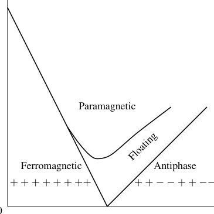
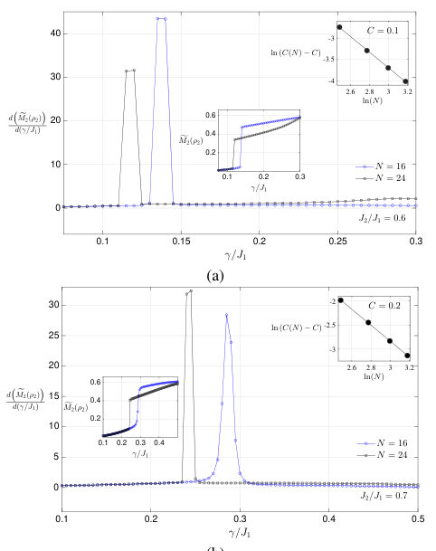
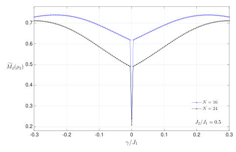
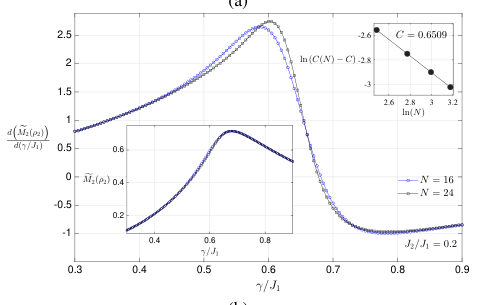
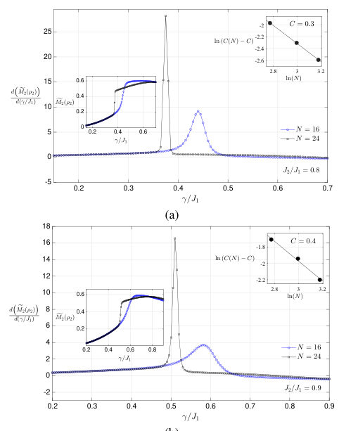
Summary. This paper evaluates the effectiveness of using Stabilizer Renyi Entropy as a local probe for quantum criticality. It demonstrates that while purity-corrected SRE is excellent for detecting certain transitions in frustrated models, the raw SRE may be more reliable in low-frustration regimes. The study provides a new way to use quantum magic as a signature of phase transitions.
Why it may be interesting. It explores how non-stabilizer resources (quantum magic) can act as a complementary diagnostic tool to traditional entanglement entropy for identifying phase transitions in frustrated many-body systems.
Main problem. Investigating whether the Stabilizer Renyi Entropy (SRE) and its purity-corrected version can serve as effective local probes for detecting quantum phase transitions.
Main result. The purity-corrected SRE successfully detects the antiphase-floating transition in the high-frustration TANNNI model and the first-order transition in the Quantum Compass Model, while the raw SRE is more accurate for the low-frustration TANNNI regime.
Method. The authors use Exact Diagonalization for the TANNNI model and Jordan-Wigner/Bogoliubov transformations for the QCM, applying finite-size scaling to the derivatives of the SRE.
Model / system. The study focuses on the 1D Transverse Axial Next-Nearest-Neighbor Ising (TANNNI) model and the 1D Quantum Compass Model (QCM).
Key observables. Second-order Stabilizer Renyi Entropy (SRE), purity-corrected SRE, and their first derivatives with respect to control parameters.
Important parameters / regimes. Transverse field strength (gamma), frustration ratio (J2/J1), and anisotropy ratio (Jx/Jz).
Assumptions / limitations. The purity-corrected SRE is used to mitigate the effects of mixedness in reduced density matrices, though it is noted not to be a true magic monotone for mixed states.
Figures summary. Figure 1 shows the TANNNI phase diagram; Figures 2-6 display SRE and its derivatives for various TANNNI regimes; Figure 7 compares extracted transition lines to established boundaries; Figure 13 shows SRE for the QCM.
Paper structure. The paper introduces the SRE as a probe, describes the TANNNI and QCM models, details the analytical and numerical methods (JW transformation, BdG, ED), presents results for high and low frustration regimes in TANNNI, analyzes the QCM transition, and concludes with a comparison of SRE types.
We investigate the effectiveness of the stabilizer Rényi entropy (SRE), a quantifier associated with non-stabilizer resources (quantum magic), as an indicator of quantum phase transitions. Specifically, we analyze the behavior of the purity-corrected SRE of reduced density matrices in the ground states of two one-dimensional spin models: the transverse axial next-nearest-neighbor Ising (TANNNI) model and the quantum compass model (QCM). The ground state of the TANNNI model is obtained using exact diagonalization techniques, while the QCM is analyzed using the Jordan--Wigner (JW) transformation followed by Bogoliubov diagonalization of the resulting quadratic fermionic Hamiltonian. For the TANNNI model, the purity-corrected SRE successfully detects the antiphase--floating phase transition in the high-frustration regime, while in the low-frustration regime the raw (purity-uncorrected) SRE reproduces the known ferromagnetic--paramagnetic phase boundaries more accurately. For the QCM, the purity-corrected SRE exhibits a clear signature near the isotropic point \(J_x/J_z=1\), where the system undergoes a first-order quantum phase transition. Our results establish SRE of reduced states as a complementary probe of quantum criticality and provide further insight into the role of non-stabilizer resources in many-body quantum phase transitions.
Authors: Luis Lozano
Type: experiment · Category: quantum information and computing · PDF: https://arxiv.org/pdf/2605.17623v1
Analysis basis: full PDF text, analyzed in chunks
Topic relevance: 🔥 QC/QI experiment 4/5
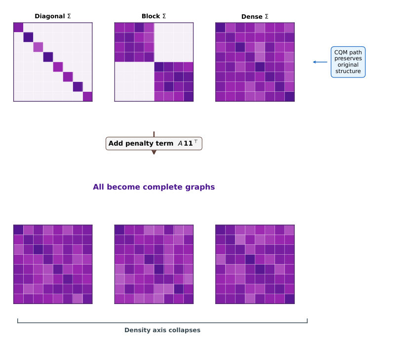
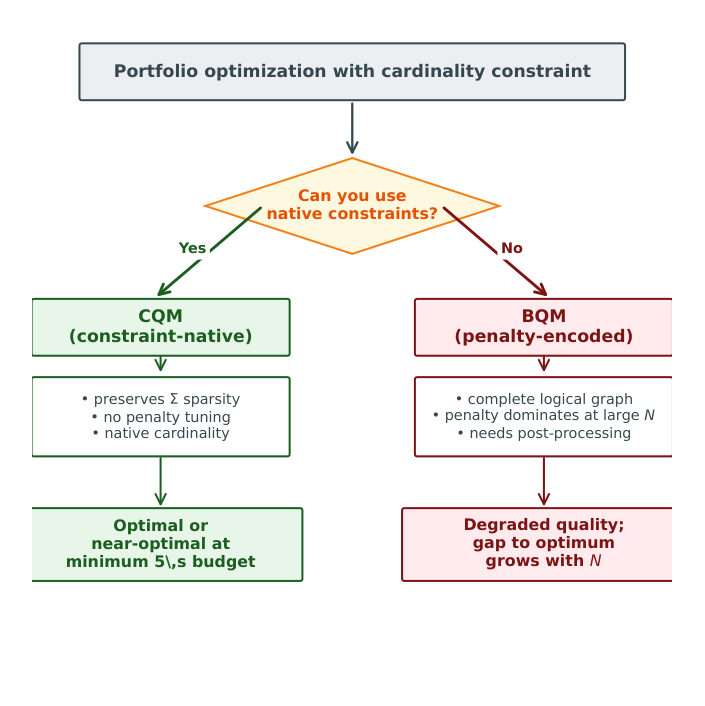
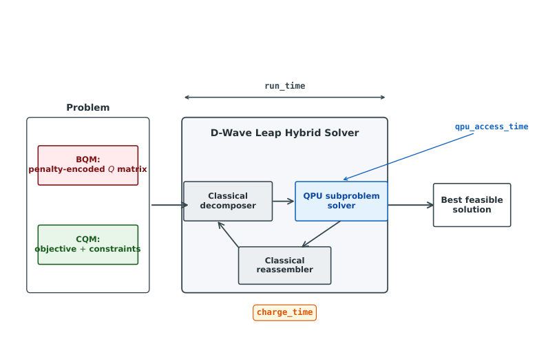
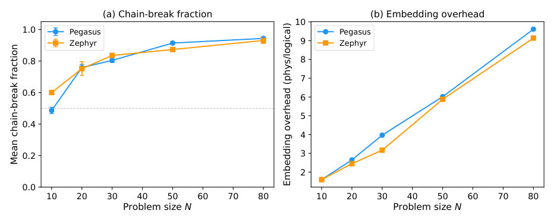
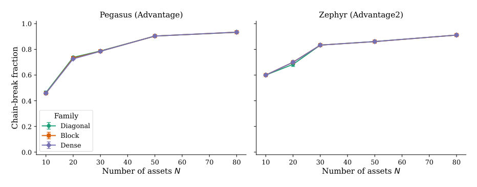
Summary. This paper audits D-Wave's hybrid solver, revealing that the observed performance gains in portfolio optimization stem from a classical preprocessing pipeline rather than quantum sampling. It demonstrates that the constraint-native CQM interface is significantly more efficient than the BQM approach because it avoids unnecessary graph densification.
Why it may be interesting. not directly relevant
Main problem. Auditing the actual quantum contribution of D-Wave's hybrid service in portfolio optimization and investigating the performance gap between constraint-native (CQM) and penalty-encoded (BQM) formulations.
Main result. The study finds that the reported hybrid advantage is primarily due to a classical decomposition pipeline rather than quantum sampling, as QPU access time accounts for only ~0.7% of the total runtime. Additionally, the CQM interface is superior because it preserves sparsity and avoids the 'density-axis collapse' caused by penalty encoding.
Method. A comparative performance audit using D-Wave hybrid solvers (LeapHybrid-CQM and LeapHybrid-BQM) against classical baselines (Gurobi MIQP and Simulated Annealing) on synthetic and real-world financial datasets.
Model / system. The problem is a cardinality-constrained mean-variance-turnover (MVT) portfolio optimization model, implemented on D-Wave Advantage systems using Pegasus and Zephyr topologies.
Key observables. QPU access time, relative gap to Gurobi optimality, chain-break fractions, embedding overhead, and solution determinism/variance.
Important parameters / regimes. Problem size (N = 10 to 640), wall-clock budgets (5s to 300s), covariance density (diagonal, block-diagonal, dense), and penalty weight (A).
Assumptions / limitations. The study assumes a fixed penalty weight (A=4.0) for BQM based on prior literature and focuses on a specific class of portfolio optimization problems.
Figures summary. Figure 1 illustrates the mechanism of constraint-induced density increase; Figure 2 summarizes the advantages of CQM over BQM; Figure 6 and 7 show the divergence of BQM and SA from the optimal Gurobi baseline as problem size increases.
Paper structure. The paper begins with an audit of QPU contribution, followed by a structural analysis of density-axis collapse in BQM, an evaluation of formulation superiority (CQM vs BQM), a study of budget saturation and determinism, and concludes with recommendations for benchmarking quantum-finance applications.
We audit how much of D-Wave's hybrid quantum-classical portfolio-optimization service is actually quantum. On cardinality-constrained mean-variance-turnover instances spanning N equal to 10 to 640 with a Gurobi MIQP optimality anchor, the constraint-native LeapHybridCQM service matches Gurobi's proven optimum on all 54 instances where Gurobi proves optimality, but the mean QPU access time is only 0.034 seconds out of a 5-second wall-clock budget, roughly 0.7 percent of the run. The remaining roughly 99 percent is the service's classical decomposition, sub-problem assembly, and feasibility-aware reassembly, so the reported D-Wave hybrid win on this problem class is a constraint-native classical pipeline with a small QPU contribution rather than a quantum-sampling win. Two structural results sharpen this audit. First, the cardinality penalty contributes a dense rank-one term that makes the penalty-encoded logical graph fully connected regardless of the original covariance density, collapsing the intended density benchmark axis for all penalty-encoded paths while leaving the constraint-native sparsity intact. Second, the constraint-native service returns identical solutions at every tested wall-clock budget from 5 to 300 seconds and across 10 repeated calls, a determinism property of the service on this problem class. Together with two classical baselines, namely Gurobi MIQP and simulated annealing, and a comparison against the penalty-encoded hybrid interface, these results extend the prior constraint-native versus penalty-encoded observation of Sakuler et al. from the statement that the constraint-native interface handles constraints natively to the operational decomposition of where the win actually originates, a finding that reframes how D-Wave hybrid performance should be reported in quantum-finance benchmarks.
Authors: Irène Marcovici, Siamak Taati
Type: theory · Category: statistical mechanics · PDF: https://arxiv.org/pdf/2605.16904v1
Analysis basis: full PDF text, analyzed in chunks
Topic relevance: entanglement & information structure 3/5 · non-equilibrium dynamics 3/5 · driven-dissipative phase transition 2/5 · methods for driven-dissipative 2/5 · non-equilibrium universality 2/5 · scars & prethermalization 2/5
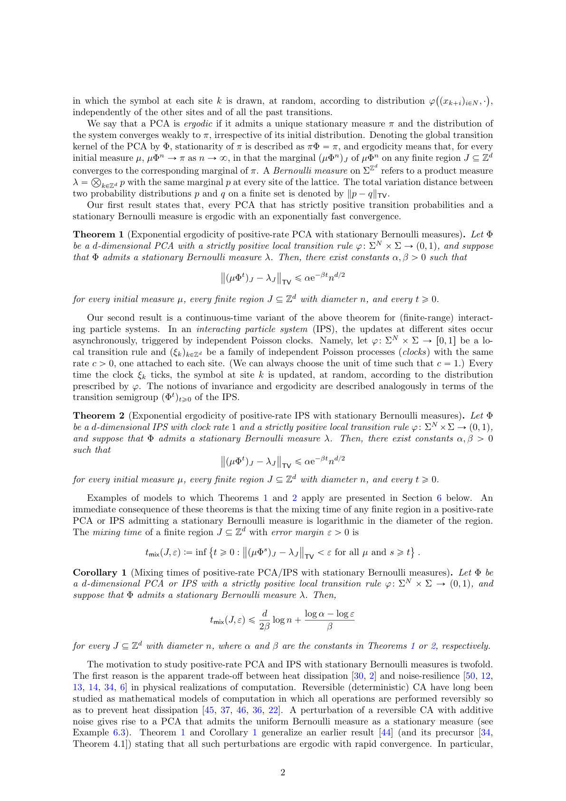
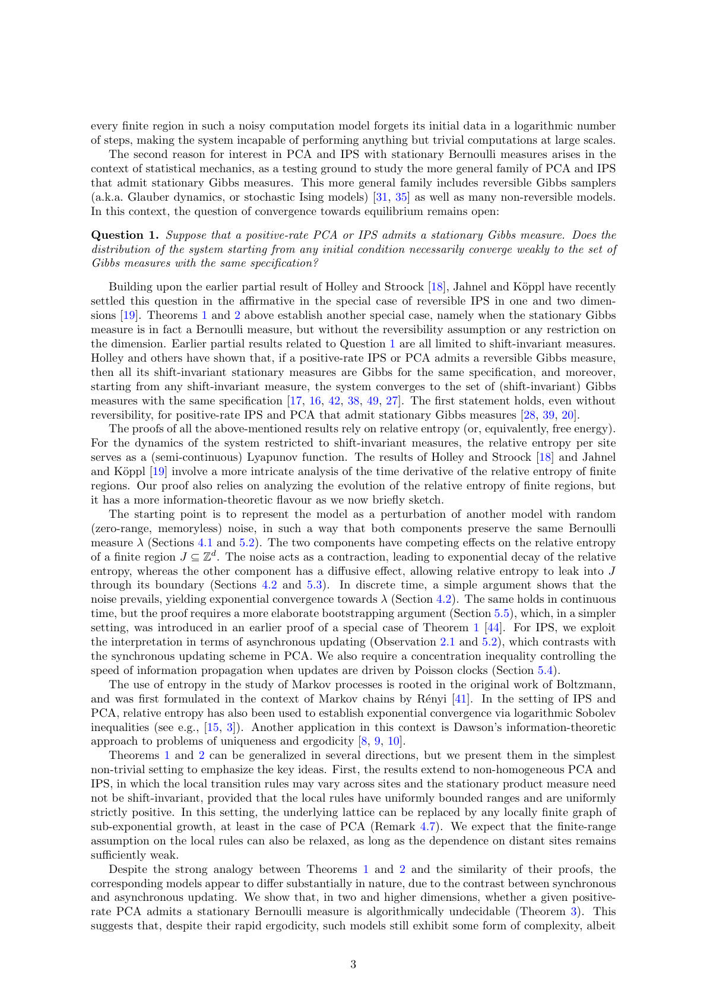
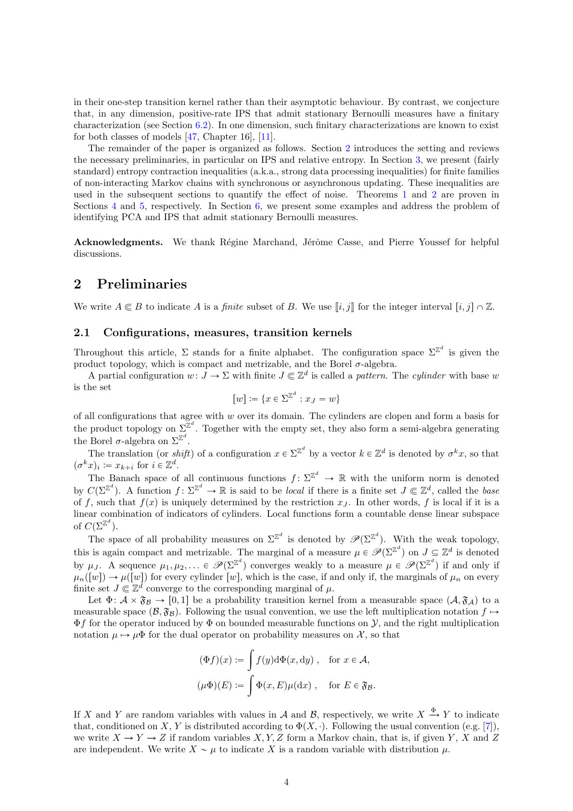
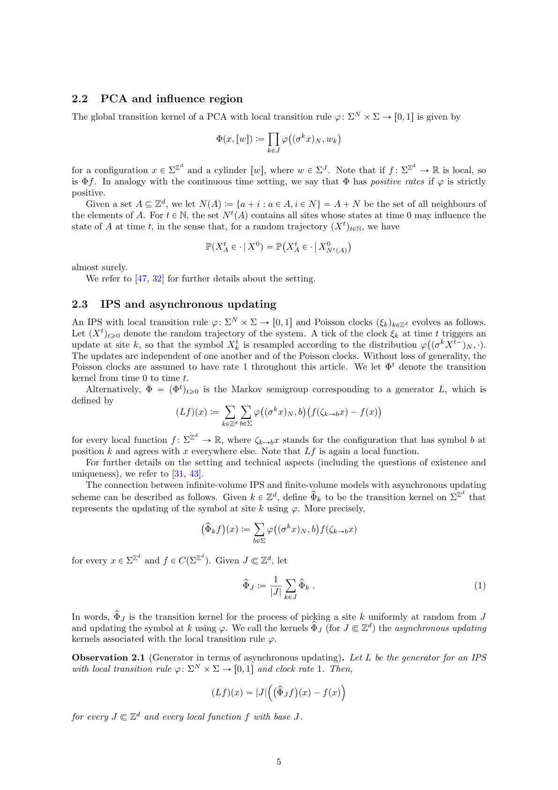
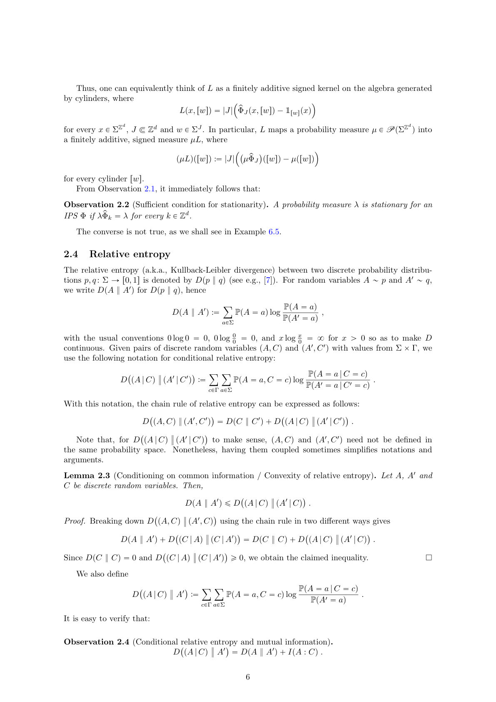
Summary. The paper proves that stochastic lattice models like PCA and IPS converge exponentially fast to their stationary Bernoulli measures if the transition rules are strictly positive. It also demonstrates that in two or more dimensions, it is computationally impossible to distinguish between systems that have such a stationary measure and those that do not.
Why it may be interesting. This work is highly relevant to many-body dynamics and open quantum systems, as it provides rigorous bounds on how local noise and information exchange drive a system toward equilibrium (forgetting initial conditions) and explores the complexity of characterizing steady states.
Main problem. Investigating the ergodicity, convergence properties, and algorithmic complexity of Probabilistic Cellular Automata (PCA) and Interacting Particle Systems (IPS) that admit stationary Bernoulli measures.
Main result. The authors prove that positive-rate PCA and IPS admitting stationary Bernoulli measures are exponentially ergodic with logarithmic mixing times, and show that in dimensions d >= 2, these systems are algorithmically indistinguishable from those that do not admit such measures.
Method. An information-theoretic approach using relative entropy (Kullback-Leibler divergence) as a Lyapunov function, combined with noise decomposition and strong data processing inequalities.
Model / system. Discrete-time Probabilistic Cellular Automable (PCA) with synchronous updates and continuous-time Interacting Particle Systems (IPS) with asynchronous updates on a d-dimensional lattice.
Key observables. Relative entropy (Kullback-Leibler divergence), total variation distance, and mixing time.
Important parameters / regimes. Positive transition rates (noise strength), lattice dimension d, and the diameter of the observed region n.
Assumptions / limitations. The systems must have strictly positive transition probabilities (positive-rate) and admit a stationary Bernoulli measure.
Paper structure. The paper introduces the problem of ergodicity in PCA/IPS, develops a noise decomposition framework, proves entropy contraction for both synchronous and asynchronous updates, establishes exponential ergodicity via a bootstrap argument, and concludes with a proof of algorithmic undecidability in higher dimensions.
We prove that every probabilistic cellular automaton with strictly positive transition probabilities that admits a stationary Bernoulli measure is exponentially ergodic. Moreover, the mixing time of any finite region in such a system is logarithmic in the diameter of the region. A similar result holds in continuous time for positive-rate, finite-range interacting particle systems. The proofs use entropy, and rely on a representation of the system as a perturbation of another system with noise. The ergodic behaviour results from a competition between the accumulation of randomness due to noise and the diffusion of randomness due to local information exchange. We show that, in two and higher dimensions, the positive-rate probabilistic cellular automata that admit stationary Bernoulli measures are algorithmically indistinguishable from those that do not.
Authors: Lila Sarfati, Julien Tailleur, Frédéric van Wijland
Type: theory · Category: statistical mechanics · PDF: https://arxiv.org/pdf/2605.16503v1
Analysis basis: full PDF text, analyzed in chunks
Topic relevance: Keldysh / 2PI / non-Gaussian methods 3/5 · non-equilibrium dynamics 3/5 · non-equilibrium universality 3/5 · driven-dissipative phase transition 2/5 · methods for driven-dissipative 2/5
Summary. This paper establishes a rigorous field-theoretic method to derive the effective motion of an interface from the underlying bulk dynamics. It corrects widespread errors in applying mean-field approximations to active matter and provides a systematic way to compute non-linear interface evolution.
Why it may be interesting. not directly relevant
Main problem. The lack of a controlled, systematic field-theoretical framework to derive interface dynamics from bulk dynamics, particularly for non-equilibrium and active systems where common mean-field approximations are mathematically unjustified.
Main result. The authors derive a unified framework that recovers known equilibrium results (like the Edwards-Wilkinson equation) and extends to non-equilibrium models, demonstrating that a popular mean-field ansatz is uncontrolled for active theories and can lead to incorrect predictions.
Method. The study uses the dynamical-action formalism (Janssen-De Dominicis action) and a geometric projection operator to integrate out bulk fluctuations, employing perturbation theory and spectral analysis of the linearized operator.
Model / system. The paper focuses on interfaces separating two stable phases in scalar field theories, specifically examining Model A (non-conserved) and Model B (conserved) dynamics, as well as active versions of these models.
Key observables. Interface height field h(r, t), interface relaxation rate (dispersion relation), drift velocity, and bulk fluctuation field chi.
Important parameters / regimes. Temperature (or noise amplitude) T, surface tension sigma, interface width xi, and wavevector q.
Assumptions / limitations. The analysis assumes a low-temperature/weak-noise limit, a large-wavelength limit (q xi << 1), and focuses on weakly deformed interfaces.
Figures summary. Figure 1 provides a cartoon of a fluctuating interface with bulk deformations; Figure 2 shows relaxation dynamics; Figure 4 shows the exponential decay of Fourier amplitudes of excited modes.
Paper structure. The paper begins by identifying the methodological gap and criticizing the mean-field ansatz, then introduces a new geometric definition for the interface, proceeds to derive the linear dynamics for Model A and Model B, and concludes by discussing non-linear terms and active matter applications.
We study the dynamics of weakly deformed interfaces separating two stable phases, starting from the fluctuating hydrodynamics of the phase-separating fields. Using a well-chosen definition for the interface and the dynamical-action formalism to represent path probabilities, we derive the linear relaxation of the interface and the fluctuations around it for a large class of models. Our method applies to equilibrium dynamics, where it recovers and complements existing results, but also extends to their non-equilibrium counterparts. We explain how non-linear terms can be systematically computed and illustrate their derivations in the case of (active) model A. We highlight the danger of a popular ansatz used to derive interface dynamics, which was rigorously established in equilibrium but is uncontrolled for active field theories.
Authors: Surachate Limkumnerd
Type: theory · Category: statistical mechanics · PDF: https://arxiv.org/pdf/2605.17074v1
Analysis basis: full PDF text, analyzed in chunks
Topic relevance: non-equilibrium dynamics 3/5 · correlated / nonlocal dissipation 2/5 · entanglement & information structure 2/5 · methods for driven-dissipative 2/5 · quantum measurements 2/5
Summary. This paper establishes a theoretical framework for upper-bounding mean entropy production using the running extrema of the entropy-production martingale. It introduces a novel decomposition that quantifies how dynamical processes deviate from the theoretical maximum through allocation and curvature gaps. This provides a complementary tool to the standard fluctuation relations used to find lower bounds on dissipation.
Why it may be interesting. This is highly relevant for researchers in open quantum systems and many-body dynamics as it provides a new way to constrain dissipation and quantify the thermodynamic cost of fluctuations using path-level information.
Main problem. The paper seeks to determine the upper bounds on mean entropy production in stochastic thermodynamic processes using information from path extrema, complementing the well-known lower bounds provided by fluctuation relations.
Main result. The author derives a path-extrema upper envelope (U_ext) and provides an exact identity decomposing the gap between the actual mean entropy production and this bound into an allocation gap (A) and a curvature gap (C).
Method. The study uses martingale stochastic thermodynamics, framing the derivation of the upper envelope as a continuous knapsack optimization problem and employing convexity/secant-line arguments.
Model / system. The framework applies to steady-state stochastic processes where the exponential entropy production is a positive martingale, specifically including stationary Markov jump processes and diffusion processes.
Key observables. Total stochastic entropy production (Sigma_T), running extrema of the martingale (L_T, H_T), and the efficiency ratio (rho_T).
Important parameters / regimes. The martingale-cost budget (K), the efficiency ratio (rho), and the entropy-production excursions (A_T, B_T).
Assumptions / limitations. The results assume the process is a positive martingale (M_t = e^-Sigma_t) and that the integral fluctuation theorem holds.
Figures summary. Figure 2 illustrates the continuous knapsack problem via cost vs. gain plots; Figure 3 shows the empirical decomposition of the entropy production gap into A and C components; Figure 4 displays the distribution of envelope classes in a Markov-jump process.
Paper structure. The paper begins by demonstrating the insufficiency of one-sided bounds, moves to deriving deterministic two-sided bounds, introduces the random path-extrema upper envelope via a knapsack optimization, and concludes with a gap decomposition verified by numerical simulations of Markov jump processes.
Fluctuation relations imply the second-law inequality $\langleΣ_T\rangle\ge0$, but path extrema can also constrain how large the mean entropy production can be. For steady-state processes with entropy-production martingale $M_t=e^{-Σ_t}$, we show that knowing only the positive running maximum of $Σ_t$ gives no improvement over the trivial endpoint bound: rare negative entropy-production excursions can still carry the exponential weight required by the fluctuation relation. Using the running extrema $L_T=\inf M_t$ and $H_T=\sup M_t$, we derive a path-extrema upper envelope $\mathcal{U}_{\rm ext}$. The relaxed envelope problem ranks realized intervals by the entropy gain per martingale cost, $\ln(H_T/L_T)/(H_T-L_T)$, giving a continuous knapsack problem. The actual mean satisfies the exact identity $\langleΣ_T\rangle=\mathcal{U}_{\rm ext}-\mathcal{A}-\mathcal{C}$, where $\mathcal{A}$ is an allocation gap across realized envelopes and $\mathcal{C}$ is a curvature gap within each envelope. Thus path extrema set the upper envelope, while the two gaps quantify how actual dynamics allocate terminal outcomes across envelope classes and place terminal values within each realized envelope. This turns path-extrema information into a quantitative upper-bound theory for entropy production, complementary to the usual lower-bound role of fluctuation relations.
Authors: Francisco Monroy
Type: theory · Category: statistical mechanics · PDF: https://arxiv.org/pdf/2605.17621v1
Analysis basis: full PDF text, analyzed in chunks
Topic relevance: Keldysh / 2PI / non-Gaussian methods 3/5 · correlated / nonlocal dissipation 2/5 · methods for driven-dissipative 2/5 · non-equilibrium dynamics 2/5 · quantum measurements 2/5
Summary. This paper proposes that Langevin noise is not an external input but emerges from fluctuations in the initial and final boundary conditions of a system's action. By using Hamilton-Jacobi theory, the author shows how these boundary uncertainties propagate to create a state-dependent effective force. This provides a first-principles link between deterministic variational mechanics and stochastic dynamics.
Why it may be interesting. This provides a fundamental derivation of stochasticity from deterministic variational principles, offering a new way to view the emergence of open quantum system dynamics and noise from boundary-driven uncertainty.
Main problem. The paper seeks to identify a first-principles, variational origin for Langevin noise, rather than treating it as a phenomenological or externally imposed stochastic force.
Main result. The author demonstrates that stochastic forces can emerge from fluctuations in Hamilton's principle boundary/endpoint data, resulting in a state-dependent, multiplicative noise that recovers standard additive Langevin noise only in the Markovian coarse-grained limit.
Method. A variational framework using the first variation of the Lagrangian action and Hamilton-Jacobi propagation to transport boundary-induced perturbations through the bulk dynamics.
Model / system. The study focuses on mechanical Hamiltonians of the form H(q, p) = p^2/2m + V(q), specifically using a harmonic oscillator as a benchmark, and discusses extensions to field theories.
Key observables. The effective Langevin force xi(t), which is found to be multiplicative, anisotropic, and state-dependent.
Important parameters / regimes. The Hessian of Hamilton's principal function (acting as a geometric filter), the overdamped limit, and the Markovian coarse-grained limit.
Assumptions / limitations. Assumes a single-valued Hamilton-Jacobi branch and smooth boundary fluctuations.
Figures summary. Figure 1 illustrates the distinction between fixed endpoints (a single reference extremal) and fluctuating endpoints (a family of nearby extremals due to environmental uncertainty).
Paper structure. The paper introduces the problem of noise origins, develops a variational framework based on Hamilton's principle, uses Hamilton-Jacobi theory to derive the effective force, benchmarks the theory with a harmonic oscillator, and discusses limits and field-theoretic extensions.
Stochastic forces are usually postulated or obtained by eliminating environmental degrees of freedom. Here we identify a variational origin: fluctuating endpoint data in Hamilton's principle induce fluctuations of the on-shell action. Hamilton--Jacobi propagation transports this boundary imprint, whose gradient generates an effective Langevin force inherited from boundary-action fluctuations. The resulting force is not freely specifiable: its amplitude is filtered by the Hessian of Hamilton's principal function, yielding multiplicative and state-dependent noise. Homogeneous additive Langevin forcing is recovered only as a Markovian coarse-grained limit.
Authors: Ankan Banerjee, Manuel Santos Gutierrez, John Moroney, Valerio Lucarini
Type: theory · Category: statistical mechanics · PDF: https://arxiv.org/pdf/2605.16574v1
Analysis basis: full PDF text, analyzed in chunks
Topic relevance: methods for driven-dissipative 3/5 · non-equilibrium dynamics 3/5 · driven-dissipative phase transition 2/5 · non-equilibrium universality 2/5
Summary. This paper presents a data-driven approach using Koopman operator theory to identify metastable states and quantify transition rates in stochastic systems. It demonstrates that the subdominant Koopman mode can reconstruct basin boundaries and that its decay rate accurately predicts escape times. The method is robust for both equilibrium and non-equilibrium dynamics, even in the presence of rotational forces.
Why it may be interesting. The method provides a way to characterize transitions and metastable states in high-dimensional, non-equilibrium systems using only data, which is highly relevant for studying dissipation and decoherence in open quantum systems.
Main problem. Developing a purely data-driven, geometry-agnostic method to study noise-induced transitions and metastability in complex stochastic systems where governing equations are unknown.
Main result. The Koopman operator framework accurately reconstructs basin boundaries and predicts escape time statistics, showing strong agreement with Large Deviation Theory in both equilibrium and non-equilibrium regimes.
Method. The authors use Extended Dynamic Mode Decomposition (EDMD) to approximate the Koopman and Perron-Frobenius operators from time-series data, validated against Ulam's method and analytical Large Deviation Theory.
Model / system. A 2D stochastic bistable system (Rotating Double Well Potential) described by an Ito diffusion process, featuring two attractors, a saddle point, and a rotational component that drives the system out of equilibrium.
Key observables. Mean exit time, subdominant Koopman modes (for basin reconstruction), Koopman eigenvalues (decay rates), and the 0-level set of the subdominant mode.
Important parameters / regimes. Noise intensity (alpha), rotation strength (mu), and the weak-noise limit (alpha -> 0).
Assumptions / limitations. The noise is assumed to be non-degenerate (invertible covariance), and the dictionary of basis functions must sufficiently span the relevant subspace.
Figures summary. Plots of Koopman eigenvalues and spectral gaps; heat maps of Koopman modes overlaid with true basin boundaries; time-series visualizations of mode-based transition identification; and eigenfunctions of the Fokker-Planck operator.
Paper structure. The paper introduces the problem of noise-induced tipping, presents the Koopman-based data-driven framework, applies it to a 2D rotating bistable model, validates results against Large Deviation Theory, and explores the role of saddle dynamics and rotation.
We study the metastability properties of a simple prototypical bistable system using the formalism of the Koopman operator. Instead of studying noise-induced transitions by following the trajectories of the system, we track them by studying the time evolution and the decay rate of the subdominant mode of the Koopman operator, thus in a geometry-agnostic framework. We find agreement with the predictions - both the exponential and subexponential ones - of large deviation theory in the weak-noise limit for the statistics of escape time, both in equilibrium and nonequilibrium conditions. The subdominant Koopman mode also allows for an accurate reconstruction of the competing basins of attraction. Going deeper in the Koopman spectrum, we are able to recognise modes that are associated with intrawell variability as well as with the escape of trajectories from the saddle towards the attractor, both in the equilibrium and nonequilibrium case. Our methodology, being grounded in purely data-driven techniques, could be helpful for studying high-dimensional metastable systems.
Authors: Ali Martin Zynda, Paula I. Villar, Fernando C. Lombardo
Type: theory · Category: other · PDF: https://arxiv.org/pdf/2605.17016v1
Analysis basis: full PDF text, analyzed in chunks
Topic relevance: correlated / nonlocal dissipation 3/5 · entanglement & information structure 3/5 · methods for driven-dissipative 2/5 · non-equilibrium dynamics 2/5
Summary. This paper demonstrates that in nonlinear light-matter systems, protecting quantum features like geometric phases requires more than just resonance; it requires the dissipation to align with the system's unitary rotation. By showing that environmental action can reshape state-space geometry, the study offers new principles for engineering robust evolution in noisy quantum technologies.
Why it may be interesting. It provides a new geometric principle for engineering decoherence-resilient quantum states by focusing on the alignment of coherent and dissipative trajectories, which is highly relevant for designing stable open quantum platforms.
Main problem. Investigating whether standard conditions like resonance or geodesic evolution are sufficient to protect geometric phases and entanglement from environmental decoherence in nonlinear light-matter systems.
Main result. The authors find that resonance and geodesic evolution are necessary but not sufficient for robustness; true protection requires a 'dynamically enabled' alignment where dissipation preserves the plane of the unitary trajectory.
Method. Analytical diagonalization of the Hamiltonian in the low-excitation regime combined with numerical analysis of Lindblad master equation dynamics.
Model / system. A nonlinear Jaynes-Cummings model featuring Kerr-type nonlinearity, describing a two-level atom coupled to a quantized bosonic mode subject to cavity loss, atomic relaxation, and dephasing.
Key observables. Geometric phase (GP), Negativity (entanglement), and population dynamics (Rabi oscillations).
Important parameters / regimes. Detuning (Delta), Kerr nonlinearity (chi), coupling strength (g), and dissipation rates (gamma, Gamma, Gamma_z).
Assumptions / limitations. Zero-temperature environment, validity of the Rotating Wave Approximation (RWA), and restriction to the low-excitation regime.
Figures summary. Figure 1 compares Negativity evolution in closed vs. open systems; Figure 2 shows Negativity for various nonlinearity values; Figure 3 quantifies GP sensitivity to initial conditions; Figure 4 shows GP deviation vs. detuning; Figure 5 illustrates the alignment of trajectories on the Bloch sphere for on-resonance vs. off-resonance cases.
Paper structure. The paper introduces the nonlinear JCM and dissipation model, defines the geometric phase and entanglement metrics, analyzes the necessity of geodesic paths, demonstrates the insufficiency of resonance alone, and concludes with a general geometric criterion for robustness.
Robustness in dissipative light-matter systems has recently been associated with resonance conditions or geodesic evolution. We show that, in the nonlinear Jaynes-Cummings model, these conditions are necessary but not sufficient. Using a Kerr-type extension together with a Lindblad description of cavity losses and atomic decoherence, we identify a dynamically enabled mechanism in which the stability of geometric phases and entanglement is governed by the alignment between coherent and dissipative trajectories in Hilbert space. Our results reveal that environmental action does not merely suppress quantum features, but reshapes the geometry of state-space evolution: protection emerges only when dissipation preserves the structure of the underlying unitary dynamics. This establishes a general geometric criterion for decoherence resilience in nonlinear light-matter systems and provides guiding principles for engineering protected evolution in open quantum platforms.
Authors: Tristán M. Osán
Type: theory · Category: quantum information and computing · PDF: https://arxiv.org/pdf/2605.18485v1
Analysis basis: full PDF text, analyzed in chunks
Topic relevance: methods for driven-dissipative 3/5 · correlated / nonlocal dissipation 2/5 · entanglement & information structure 2/5 · quantum measurements 2/5
Summary. This paper introduces a new geometric framework to analyze quantum state distinguishability by looking beyond scalar fidelity. By reducing purification optimization to a Procrustes problem, it identifies a misalignment angle that captures the geometric reorientation of quantum channels. This allows for a more detailed distinction between purely dissipative and anisotropic noise processes.
Why it may be interesting. It provides a new geometric diagnostic (Theta) for characterizing the anisotropic and non-radial components of quantum noise, which is highly relevant for characterizing open quantum systems and control errors.
Main problem. The paper addresses the limitation of existing fidelity-based distance measures that provide only a scalar value for distinguishability, discarding the underlying geometric structure of optimal purifications.
Main result. The authors develop a Fano-Procrustes framework that reduces purification-overlap optimization to an orthogonal Procrustes problem on SO(3), introducing a new geometric misalignment angle (Theta) that complements scalar metrics.
Method. The work uses the Fano representation of two-qubit pure states and applies Singular Value Decomposition (SVD) to solve the orthogonal Procrustes problem on the Lie group SO(3).
Model / system. The framework is applied to mixed qubit states and various quantum channels, including depolarizing, bit-flip, phase-flip, and amplitude-damping channels, as well as an imperfect quantum NOT gate.
Key observables. Maximal purification overlap (g), entropic metric (DN), purification misalignment angle (Theta), and the optimal Procrustes rotation (S).
Important parameters / regimes. Channel error probabilities (p), damping probability (gamma), and Bloch vector length (r).
Assumptions / limitations. The current framework is specifically developed and restricted to the qubit (two-level) case.
Figures summary. Figures show the behavior of the DN metric and the misalignment angle Theta as functions of error probabilities and input state orientations for various noise channels.
Paper structure. The paper introduces the problem of purification geometry, develops the Fano-Procrustes mathematical framework, applies it to specific qubit channels to demonstrate the separation of radial and anisotropic effects, and concludes with discussions on the operational interpretation and limitations.
In this work we reformulate the Uhlmann purification-overlap optimization and develop a purification-based geometric framework for the analysis of mixed qubit states and qubit channels. Using the Fano representation of two-qubit pure states, a purification is described in terms of the Bloch vector of the system, the ancilla Bloch vector, and a real correlation matrix. For a fixed one-qubit mixed state, the freedom in the choice of purification can be parametrized by proper rotations acting on the ancillary degrees of freedom. As a result, the optimization over purifications entering the definition of the metric \(D_N\) introduced in Ref.~\cite{Lamberti2009} is reduced to an orthogonal Procrustes problem on the Lie group \(SO(3)\). This reduction yields not only the maximal purification overlap, but also the optimal rotation relating the purification frames. From this rotation we define a purification misalignment angle \(Θ\), which provides geometric information not contained in scalar fidelity-based distinguishability measures. The formalism is applied to representative qubit channels, including depolarizing, bit-flip, phase-flip, amplitude-damping channels, and an imperfect quantum NOT gate. For symmetry-adapted evolutions preserving the Bloch-vector direction, the optimal rotation is trivial and \(Θ=0\), whereas noncollinear channel actions generate a nonzero misalignment. The pair \((D_N,Θ)\) therefore separates the magnitude of the maximal purification overlap from the geometric reorientation of the optimal purification frames. Since the optimal Procrustes rotation can be lifted to a local unitary acting on the ancilla, the construction also provides an operational interpretation of the optimal purification in terms of an ancilla-side transformation.
Authors: Ronnie Slowinski, Gaël Servignat, Frédéric Chevy, Carlos Lobo
Type: theory · Category: quantum gases · PDF: https://arxiv.org/pdf/2605.18405v1
Analysis basis: full PDF text, analyzed in chunks
Topic relevance: Keldysh / 2PI / non-Gaussian methods 3/5 · analog quantum simulation 2/5 · driven-dissipative phase transition 2/5 · non-equilibrium dynamics 2/5
Summary. This paper uses effective field theory to study the transition between dimer and trimer states in a three-component Fermi gas. It reveals that external driving can control the crossover between these states and that many-body effects can create trimer states that do not exist in a vacuum. This work is significant for understanding the stability and manipulation of complex clusters in ultracold gases.
Why it may be interesting. It provides a theoretical framework for controlling many-body bound states using external drives, offering new insights into how the transition between different types of many-body clusters (like polarons and molecules) can be manipulated in ultracold atomic systems.
Main problem. Investigating the crossover between dimer and trimer states in a three-component Fermi gas, specifically how external drives and many-body effects influence the stability and binding energies of these states.
Main result. The study demonstrates a guaranteed crossover from a dimer to a trimer ground state as the atom-dimer interaction is tuned, and shows that many-body effects can induce trimer solutions (Cooper pairs) even in regimes where they are absent in vacuum.
Method. The authors use an Effective Field Theory (EFT) and a variational approach, employing Feynman rules, the T-matrix formalism, and renormalization to solve self-consistent energy equations.
Model / system. A three-component Fermi gas consisting of three distinguishable atomic species (a, b, and c). Species a and b interact via an external drive to form a non-universal closed-channel dimer, which then interacts with a Fermi sea of the third species (c) via a contact interaction.
Key observables. Two-body and three-body binding energies, atom-dimer scattering length, and the energy difference between the dimer and trimer branches.
Important parameters / regimes. Atom-dimer scattering length (1/a_AD), two-body scattering length (a_2), effective range (R), and Fermi momentum (k_F).
Assumptions / limitations. The dimer is assumed to be non-universal, and the third species is treated as a spinless fermion forming an unperturbed Fermi sea.
Figures summary. Fig 1 shows Feynman rules for the effective Hamiltonian; Fig 2 shows Feynman diagrams for two-body interactions; Fig 4 shows trimer energy bounds; Fig 9 illustrates the energy difference between trimer and dimer branches across different interaction strengths.
Paper structure. The paper introduces the EFT framework and Hamiltonian, develops the two-body sector (vacuum and medium), extends the theory to the three-body sector (trimer binding energies), analyzes the dimer-trimer crossover, and discusses the implications of external driving.
We develop an Effective Field Theory (EFT) for a system with three distinguishable atomic species and present a variational calculation of the two and three-body binding energies in vacuum and in the presence of a single Fermi sea. Specifically, we consider the case where the interaction between first two atomic species is externally driven so as to produce a (non-universal) closed-channel dimer whose coupling can be controlled independently of all other interactions. We then model the remaining interactions as a contact interaction between the dimer and a third atomic species which forms the medium. We derive analytical expressions for the dimer and trimer binding energies in vacuum and in medium, and in the latter case we predict a crossing between the dimer and trimer branches as a function of the atom-dimer scattering length, analogous to the usual polaron and molecule problem. Furthermore, we show that the position of this crossing can be controlled by varying the atom-atom coupling that results from the external drive and we discuss the implications of these findings.
Authors: Paul C Bressloff
Type: theory · Category: statistical mechanics · PDF: https://arxiv.org/pdf/2605.17906v1
Analysis basis: full PDF text, analyzed in chunks
Topic relevance: correlated / nonlocal dissipation 3/5 · entanglement & information structure 2/5 · methods for driven-dissipative 2/5 · non-equilibrium dynamics 2/5
Summary. This paper explores how a shared stochastic resetting protocol induces correlations between independent Brownian particles. It develops a mathematical framework using nested boundary value problems to show that these particles no longer behave independently. The study establishes a direct link between multi-particle exit statistics and the moments of a stochastic diffusion equation.
Why it may be interesting. This work is highly relevant to open quantum systems and many-body dynamics as it provides a mathematical framework for understanding how shared environmental noise (common-mode noise) generates entanglement-like statistical correlations in otherwise independent constituents.
Main problem. Investigating how global stochastic resetting induces statistical correlations between non-interacting Brownian particles and determining the resulting joint exit (splitting) probabilities.
Main result. The paper proves that global resetting creates emergent correlations such that the joint splitting probability cannot be decomposed into independent single-particle probabilities, and establishes a mapping between these probabilities and the moments of a stochastic diffusion equation.
Method. The author uses generalized Ito's lemma, backward Kolmogorov equations, and Green's function methods to derive a hierarchy of nested boundary value problems (BVPs).
Model / system. A population of M non-interacting Brownian particles in a 1D interval [0, L] with absorbing boundaries, subject to a global Poissonian resetting process to a common position.
Key observables. Splitting probability (probability of exiting through a specific boundary), joint splitting probability, and survival probability.
Important parameters / regimes. Resetting rate (r), diffusion coefficient (D), interval length (L), and the characteristic scale xi = sqrt(r/D).
Assumptions / limitations. Particles are non-interacting (no physical collisions); resetting is global (all particles reset simultaneously); boundaries are strictly absorbing.
Figures summary. Figure 1 shows the global resetting mechanism; Figure 2 plots joint splitting probability vs. reset rate; Figure 4 compares global vs. local gating; Figure 5 compares joint splitting probabilities for global and local gating scenarios.
Paper structure. The paper introduces the problem of emergent correlations, derives the BVP hierarchy using Ito's lemma, provides an analytical solution for the two-particle case, establishes a mapping to SPDE moment equations, and concludes with a comparison between global and local gating dynamics.
There is considerable current interest in the emergence of statistical correlations within a population of otherwise non-interacting Brownian particles subject to a common fluctuating environment or drive. Examples include global stochastic resetting, switching confining potentials, fluctuating diffusivities, and stochastically gated boundaries. Most studies have focused on the analytical structure of the stationary joint probability density (assuming it exists). In this paper, we extend previous work on the exit statistics of multiple particles in stochastically gated domains to the case of global resetting in an interval with absorbing boundaries at both ends. First, we use a generalised Itô's lemma to derive a hierarchy of boundary value problems (BVPs) for the joint splitting probability that all particles exit from the same end of the interval. The BVPs form a nested sequence with respect to the initial number of particles $M$. We explicitly solve the BVP for a pair of particles ($M=2$) and use this to illustrate the emergence of pairwise correlations. Second, we show how the BVP for the splitting probability of $M$ Brownian particles can be mapped onto the $M$th order moment equation of a stochastic diffusion equation with resetting. We thus establish a general mathematical framework to study exit problems for globally-driven particle systems.
← Index · ← Previous · Next →